第5回 ブラウザ自動化② 〜スクレイピング・URL直接ナビ〜
Web 上の情報を自動取得してデータテーブルに格納する力を身につける、カリキュラム最大の山場です。
<object> 埋め込み UI への対処として URL 直アクセスを習得します。
事前準備
- 第4回 のログインフローが手元にある
- デモサイトの staff-list.html／staff-search-popup.html を開けることを確認
A. データ抽出の基本手順
-
第4回のログインフローの続きに、スタッフ一覧ページを開く処理を追加する 開き方は次のどちらでも OK：
- (A) UI 要素ピッカーで「スタッフ一覧」サイドバーボタンを取得 → 「Web ページのリンクをクリック」でナビゲートする
- (B) 「Web ページに移動する」アクションで
staff-list.htmlの URL を直接指定して飛ぶ
-
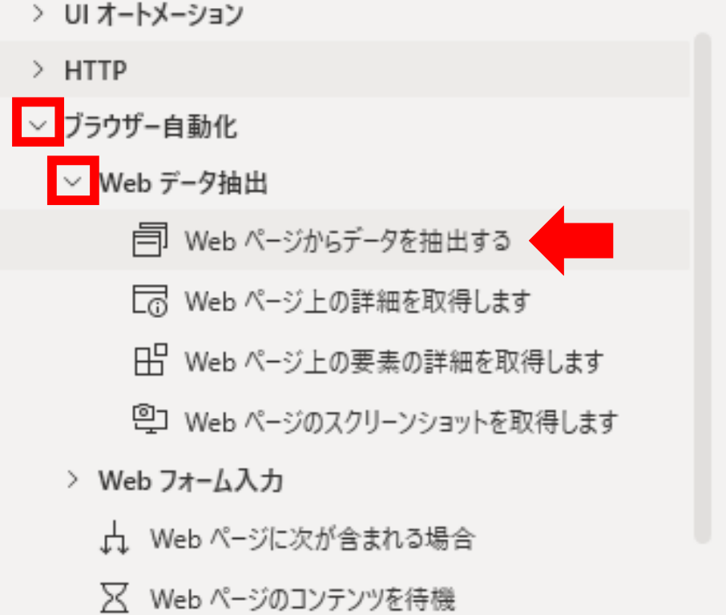
抽出アクションを配置する アクションペインで「ブラウザー自動化 ＞ Web データ抽出 ＞ Web ページからデータを抽出する」を選び、フロー上にドラッグ＆ドロップします。検索ボックスに抽出と入力すると一発で出てきます。 ※ このアクションは、いま PAD が制御している Chrome（4-A で WebDriver 起動したもの）に対して動きます。別タブや別 Chrome は対象外。 -
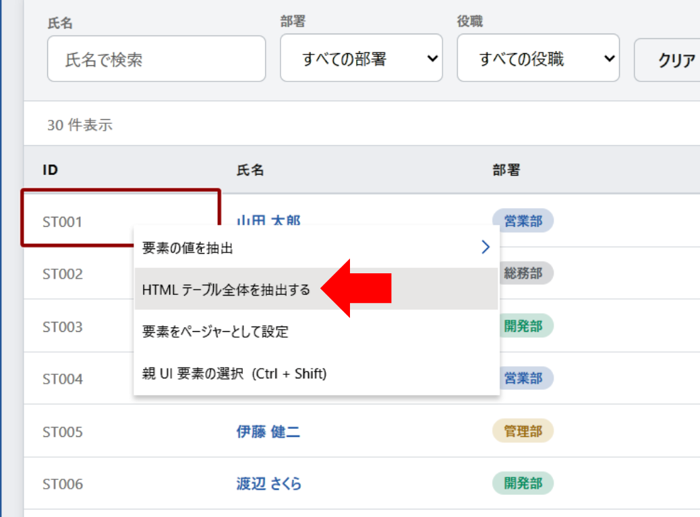
ライブ Web ヘルパーで取得したい部分を右クリック 前の手順のアクションを配置すると、ライブ Web ヘルパーが自動で立ち上がります。マウスを画面上で動かすと、要素ごとに枠線が出ます。
取得したいテーブル（例：スタッフ一覧の表）の上で右クリックし、出てきたメニューから次のどちらかを選びます：- 「要素の値を抽出」… 会社名や金額など、一つの値だけ取得したいとき
- 「HTMLテーブル全体を抽出する」… サイト内の表をまるごと取得したいとき
-
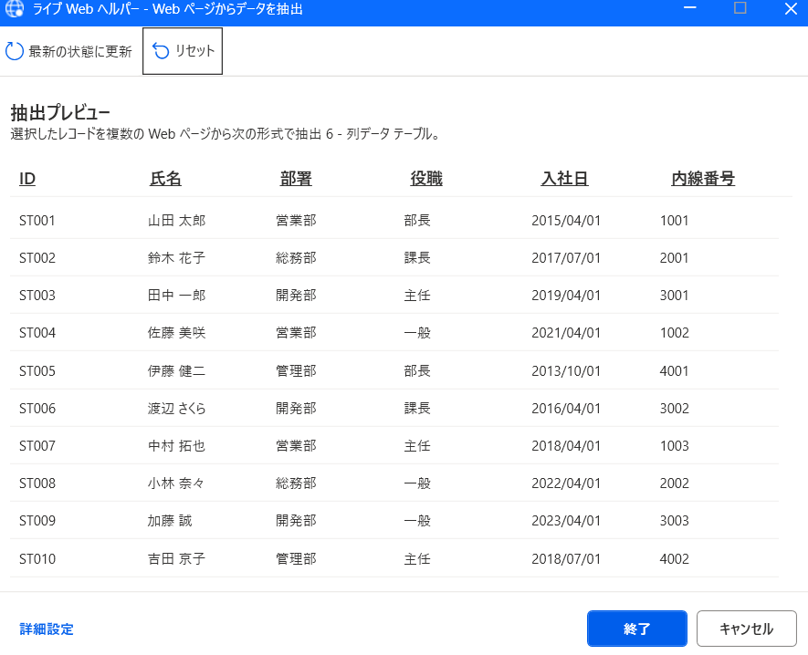
取得結果は変数に格納される（既定名：DataFromWebPage） ライブ Web ヘルパーを「完了」で閉じると、抽出結果は自動で変数に格納されます。「HTML テーブル全体を抽出する」を選んだ場合はデータテーブル型の変数に入ります（Excel の表のように行×列で持っているイメージ）。💡 変数名はリネームしておく： 既定のDataFromWebPageのままだと、複数の抽出を組み合わせたときに「どれがどれだか分からない」事故が起きます。右側の「変数」ペインで右クリック →「名前の変更」でStaffListなど内容がわかる名前に変えておくのがおすすめです。
B. ページネーション（複数ページの走破）
標準ページャー設定 と、止まらないとき用の「ラベル ＋ 移動先」パターンB-1. ページネーション（基本編）〜「ページャーとして設定」〜
1 ページだけでなく、「次へ」「>」などのページネーションが付いているサイトから全ページ分のデータをまとめて取得したいとき、最初に試すのは PAD 標準の機能です。
-
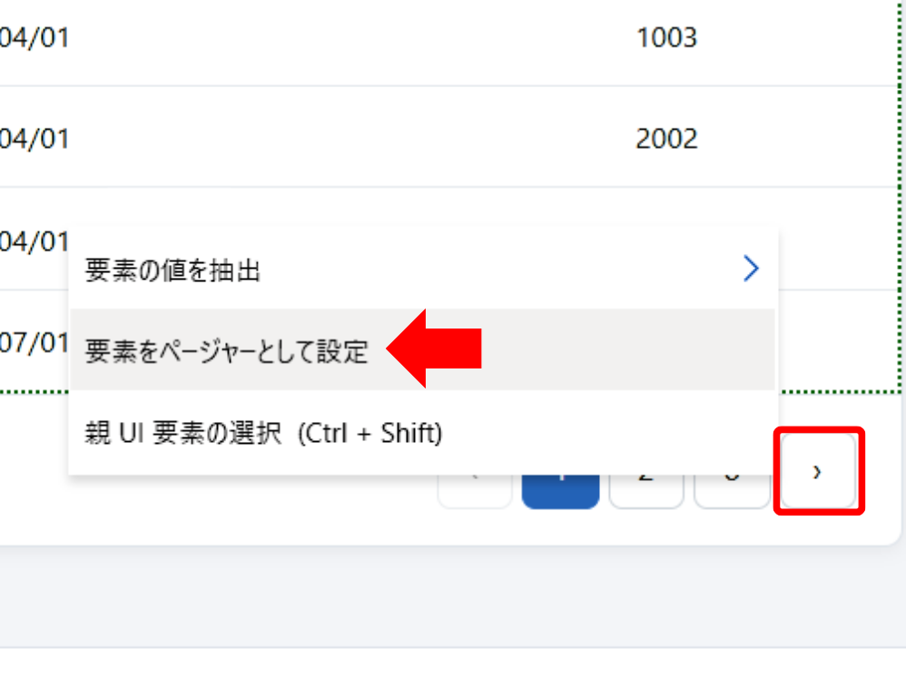
ページャーボタンを設定する 「Web ページからデータを抽出する」アクションで通常どおりライブ Web ヘルパーを起動し、5-A の③と同じ手順でテーブルを取得します。
そのままライブ Web ヘルパー上で「次へ」などのページャーボタンを右クリックし、出てきたメニューから「要素をページャーとして設定」を選択。 -
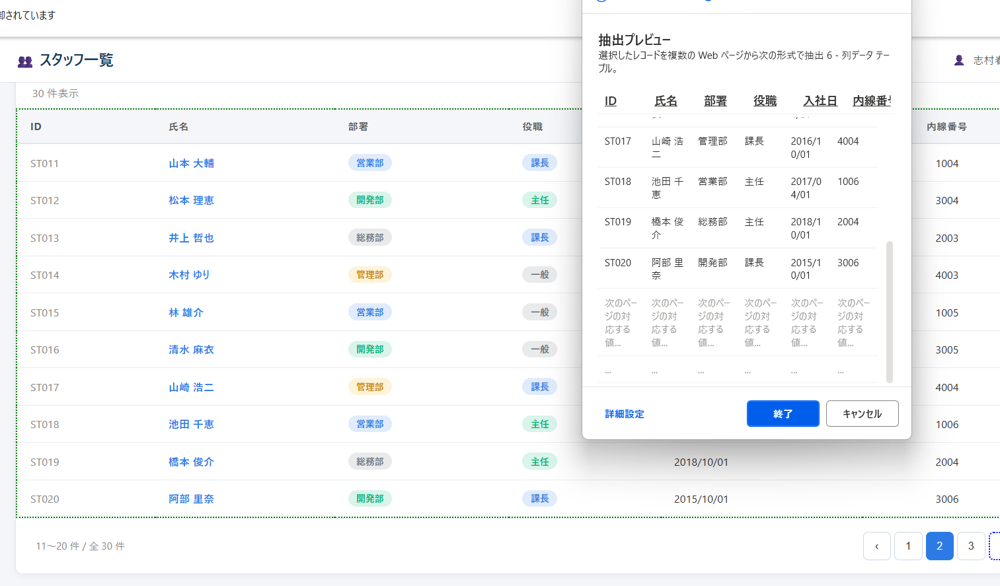
実際に次のページに進んで、テーブルが認識されているか確かめる ページャー設定の直後は必ず確認します。ブラウザ側で実際に「次へ」を押して次のページに進んでみる。👀 チェックポイント：次のページのテーブルの周りに 点線（破線）の枠 が表示されていれば、PAD が「ここも同じ取得先」と認識してくれています。このまま次の手順（データ抽出元設定）に進んで OK。 -
点線が出ていなかったら、次のページでも同じ取得設定をやり直す HTML 構造が 1 ページ目と微妙に違うサイトでは、PAD が「これは別物」と判断して点線が出ないことがあります。その場合：
- 次のページのテーブル上で右クリック
- 「HTML テーブル全体を抽出する」をもう一度選び直す
- 点線が表示されたら、その後ろのページも同様に確認していく（点線が出ない都度やり直す）
これで「このテーブルとあのテーブルは同じ取得対象だよ」と PAD に教え込んでいきます。
-
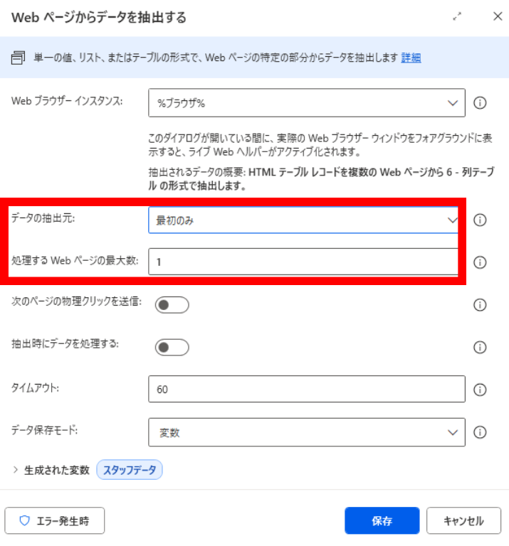
アクション設定に戻り、「データの抽出元」プルダウンで動作を選ぶ- 「すべて使用できます」を選ぶ → PAD が最後のページまで自動でページ送りしてすべて取得
- 「最初のみ」を選ぶ → 下に 「処理する Web ページの最大数」 入力欄が出てくるので、走破したいページ数（例：
10）を入力
これで、PAD が自動で「次へ」を押しながらページを送り、抽出結果を 1 つのデータテーブルにまとめてくれます。
すると PAD が「まだ次のページがある」と誤判定してしまい、最終ページの後で空ループに突入し、フローがいつまでも終わらない／タイムアウトでエラー、という事故が起きます。
👉 そんなときは次の 5-B-②（応用編：ラベル＋移動先）で対処します
1」 で最初の 1 ページだけ取得してみましょう。
B-2. ページネーション（応用編）〜ラベル ＋ 移動先に移動する で全走破〜
5-B-① の標準ページャーで止まらない問題に直面したら、ここで紹介する ラベル ＋ 移動先に移動する パターンに切り替えます。終端判定を自分で握れるので、どんなサイトでも確実に止められます。
ページネーションは本来「次へボタンが押せる間は繰り返す」というループ。これを PAD のアクションで明示的に書く、というのが発想です。
紙の地図でイメージすると：
- ラベル ＝ 戻ってくるための「目印」を置く
- 移動先に移動する ＝ その目印に戻る
- 戻る前に If 条件 Then で「次へボタンがまだ押せるか？」を判定 → 押せる間だけ目印に戻る
その部品には「属性（attribute）」と呼ばれる付箋のようなメモがいくつも付いていて、たとえば次へボタンには：
type="button"（→ これはボタン）id="nextBtn"（→ 名前は nextBtn）disabled="true"（→ いま押せない状態）
この disabled という付箋は、最終ページに到達してボタンが押せなくなると true に変わります。この属性を PAD で取得すれば「ループ終了の合図」が分かる、というわけです。
終端判定のキモは「次へボタンの Disabled 属性を取得して、true になったらループ終了」というロジックです。属性を読み取るには Webページ上の要素の詳細を取得します アクションを使います。
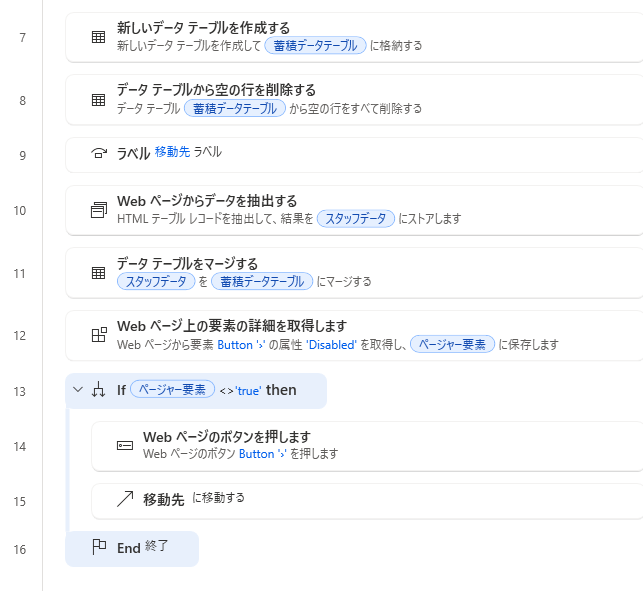
以下のループを組みます：
- 空の蓄積テーブルを用意
- ラベル（目印）を置く
- 1 ページぶん抽出 → 蓄積テーブルに追記
- 「次へ」ボタンの状態を読み取る
- If でまだ押せるか判定 → 押せるなら次へを押してラベルに戻る
押せなくなった瞬間に If を抜けて全体終了、という流れです。
📋 組み立て順（蓄積データテーブル方式）— 全 10 アクション
-
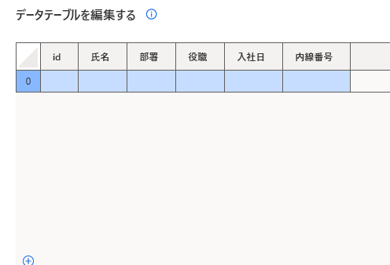
新しいデータテーブルを作成（蓄積用の空テーブル） 列名は Web から取得するテーブルとまったく同じになるように手入力で揃える。行はなにも入れない（あとから追記していく）。💡 なぜ「新しいデータテーブルを作成」が必要なのか：Webページからデータを抽出するアクションをループの中で繰り返し使うということは、抽出結果の変数が毎回新しいページのテーブルに塗り替えられていくということです。前のページのデータはそのままだとどんどん消えてしまうので、抽出したデータをストックしておく別の受け皿を用意しておく必要があります。 -
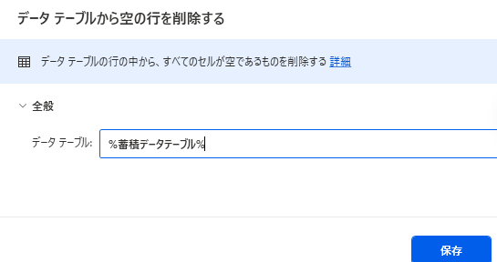
データテーブルから空の行を削除する（蓄積テーブルを対象に指定） PAD の仕様上、新しいデータテーブルを作成の直後は1 行目に必ず空白行が 1 行できてしまうので、ここでその行を削除して整えておく。これをやっておかないと、後続のFor each処理で空白行が混ざって「氏名が空」のスタッフを処理しようとして落ちます。 -
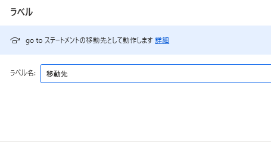
ラベル（名前：移動先）を置く ループの「戻ってくる目印」を置きます。名前は移動先など分かりやすいものに。後で移動先に移動するアクションがここに戻ってきます。 -
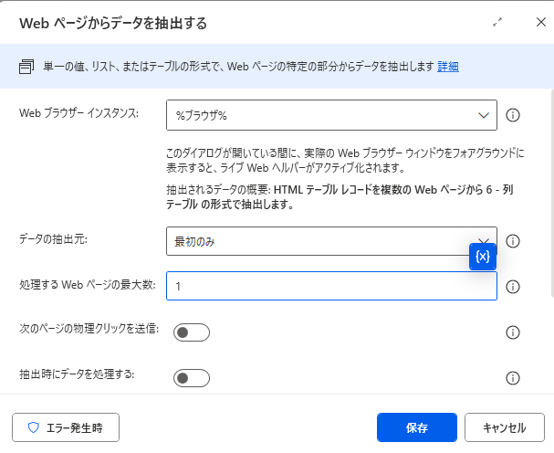
Webページからデータを抽出する（「データの抽出元」＝「最初のみ」、「処理する Web ページの最大数」＝1） 5-B-① と同じ要領で抽出設定を作りますが、ここでは 「最初のみ」＋最大数 1 で 1 ページぶんだけ取得するように絞ります。ページめくりは PAD に任せず、後ろの If で自分で制御します。 -
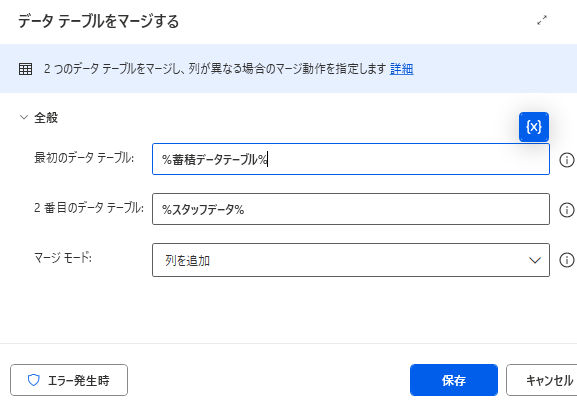
データテーブルをマージするで、いま抽出したぶんを蓄積テーブルに追記 設定画面で：- 最初のデータテーブル：
%蓄積テーブル%（手順 1 で作成したもの） - 2 番目のデータテーブル：
%DataFromWebPage%（手順 4 でいま抽出したぶん） - マージモード：そのまま変更しなくて OK
- 最初のデータテーブル：
-
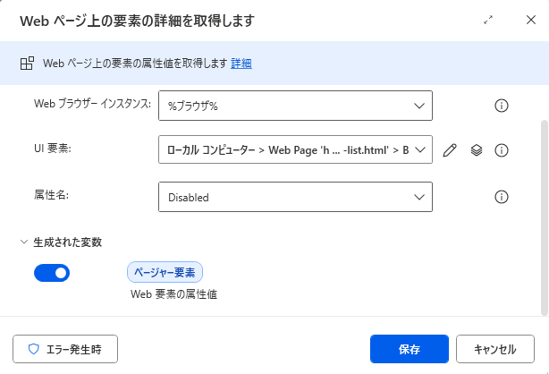
Webページ上の要素の詳細を取得しますで「次へ」ボタンのDisabled属性を読み取る 設定画面で：- UI 要素：UI 要素ピッカーで「次へ」ボタンを取得
- 属性名：プルダウンから
Disabledを選択（手入力ではなく選択肢から選べる） - 生成変数：
%ページャー要素%など分かりやすい名前にリネーム
%ページャー要素%には、押せるならfalse、押せないならtrueが入ります。 -
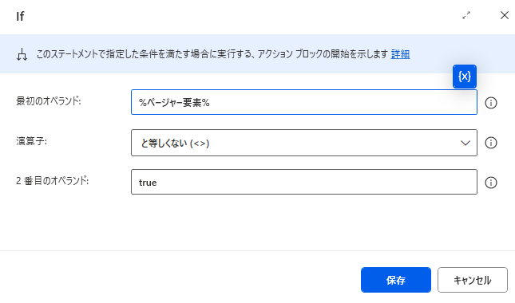
条件 →Ifアクションを置くIfアクション設定画面で：- 最初のオペランド：
%ページャー要素% - 演算子：
と等しくない (<>) - 2 番目のオペランド：
true（必ず半角で入力 — 全角だと文字列が一致せず判定が効かない／ループが止まりません）
Disabled=trueではない（＝まだ押せる）あいだだけループを続ける」という意味になります。 - 最初のオペランド：
-
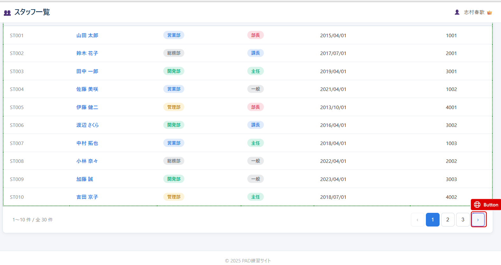
Webページのボタンを押します（次へボタンを押す） UI 要素ピッカーで「次へ」ボタンを指定し、クリックさせます。これで次のページに進みます。 -
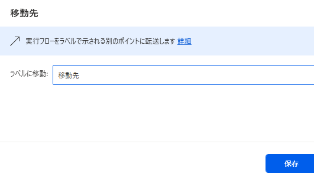
移動先に移動する＝ 手順 3 のラベルに戻る 「移動先のラベル」プルダウンで手順 3 で置いた移動先を選択。実行時にここでループの先頭まで戻り、また 1 ページぶん抽出 → マージ → 終端判定…を繰り返します。 -
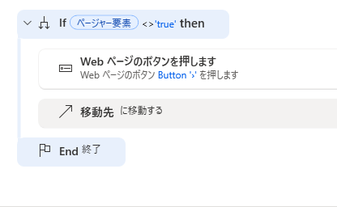
End（If を閉じる） PAD ではIfを置くと自動でEndがペアで生成されることが多いので、すでに置かれている場合はそのままで OK。次へボタンが押せなくなった瞬間、ここを抜けてフロー全体が終了します。
C. <object> 回避 ＆ URL 直アクセス
ポップアップ内 UI が取れないときの URL パラメータ動的組み立てC-1. <object> / <iframe> 埋め込み UI の限界（必読）
C-2. 解決策 〜埋め込みページの URL を特定して直接ナビゲート〜
ポップアップ内を操作する代わりに、その中身として読み込まれているページの URL そのものへ PAD から直接ナビゲートします。URL さえわかれば操作の再現は完了です。
-
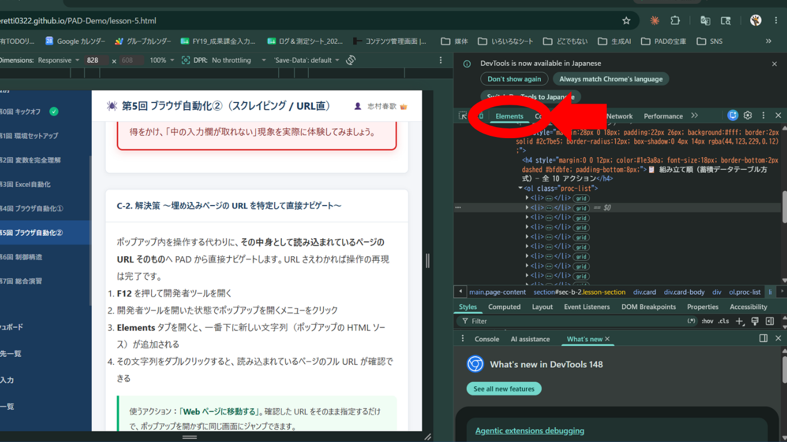
開発者ツールを開いて Elements タブを表示する サイト上で、キーボードの F12 を押すと開発者ツール（DevTools）が開きます。
F12 が効かない場合は、サイト上で右クリック → 「検証」をクリックしても開けます。
開いたら、上部にあるタブから Elements（要素）タブをクリックして開きます。ここに、いま表示されているページの HTML ソースが一覧表示されます。 -
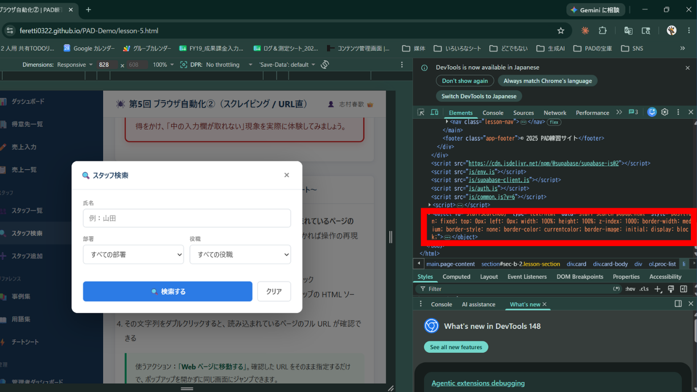
ポップアップを開くメニューをクリックする Elements タブを開いたまま、ポップアップを開くメニューをクリックします。すると Elements タブの一番下に新しい文字列（ポップアップの HTML ソース）が追加されます。 -
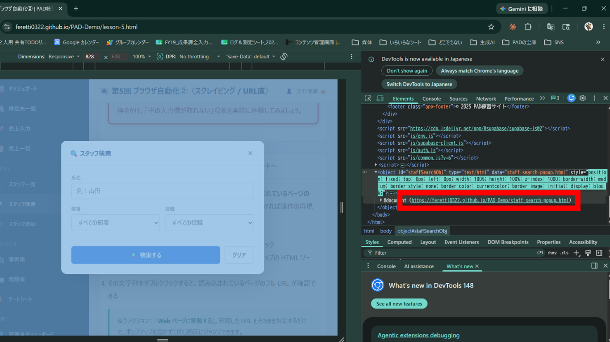
文字列をダブルクリックしてフル URL を確認する 一番下に追加された文字列をダブルクリックすると、ポップアップの中身として読み込まれているページのフル URLが確認できます。この URL をコピーすれば準備完了です。
C-3. URL パラメータを動的に組み立てる
業務サイトでは検索結果ページの URL にパラメータが付いていることが多く、入力フォームを操作する代わりに URL を組み立てて直接遷移する手法も使えます。
たとえば「営業部の主任だけを表示する」のような絞り込みが、URL の末尾に ?dept=営業部&role=主任 を足すだけで実現できているサイトでは、フォームに値を入れて検索ボタンを押す代わりに、PAD で URL を組み立てて「Web ページに移動する」アクション 1 つで同じ結果が得られます。
業務サイトでよく見かける URL パラメータのパターン：
?page=2ページ番号の指定?search=山田検索キーワード?dept=営業部&role=主任複数条件（&で連結）?id=ST001特定レコードの直接参照
🧪 実際にデモサイトで体感してみる
このサイトの staff-list.html も ?dept=...&role=... 形式の URL パラメータで絞り込みできるようになっています。下のシミュレーターで部署・役職を選ぶと、組み立てられた URL がリアルタイムに表示されます。「このURLを開く」を押すと、ポップアップ検索フォームを使わずに同じ絞り込み結果のページに飛べることが体感できます。
解答例 / 完成フローテキスト
本回のハンズオン課題の完成フローテキストをダウンロードして、PAD 編集画面に貼り付けてください。
⬇️ lesson-5.txt をダウンロードよくある詰まりと FAQ
<object>/<iframe> 埋め込みの可能性大。F12 で確認し、URL 直接ナビゲートに切り替える。